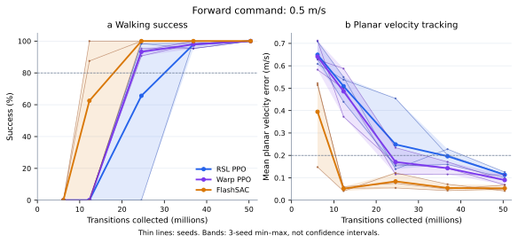

G1 locomotion: sample efficiency and training speed
FlashSAC reached the first observed walking pass with fewer samples on average. Warp PPO reduced learner update time, with a much smaller gain in the complete training loop. The report compares learning quality, production speed, and preparation and evaluation costs.
- RSL-RL PPO
- Warp PPO
- FlashSAC
3 training seeds per learner · 50.38 million transitions per run
Isaac Lab G1 walking · Torch MDP · no unified physics–learning graph
Read the interactive report